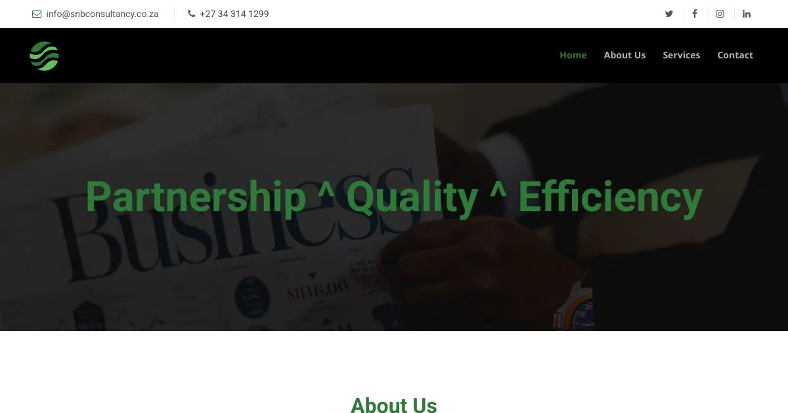

Answers before the first call.
SNB's first client call was being spent answering questions the website should have answered. I redesigned the site around those questions, and rebuilt it so the firm can keep it current itself.
The problem
In 2019, while I was a UI/UX and web designer at Sesyme (OpenSesyme) in Mthatha, the firm came to us needing this fixed. I took the work from the first meeting to launch: content audit, structure, design and build, and a site the firm could keep current itself.
SnB is a 100% black-owned network of firms, operating as SnB Chartered Accountants & Auditors for assurance work and SnB Advisory Services for accounting, taxation and advisory. It serves SMEs, NPOs and public-sector entities from three offices: Johannesburg, Mthatha and Pongola.
Auditing, accounting and taxation were headings with bullet lists. Nothing said who the work was for or what an engagement covered.
50+ clients, 12+ service lines, three offices and Big 4 experience were not presented in a way a visitor could absorb.
External audit, independent reviews, bookkeeping, payroll and tax opinions existed but could not be found.
Changes needed a developer, so prices, service lines and office details drifted out of date.
Who it is for
An SME owner, NPO director or public-sector finance manager, evaluating quietly over several visits before making contact.
A partner or manager who updates services and office details between client work, and needs to do it without a developer.
Decisions
1. Design around the questions clients ask
The site was structured around what a prospective client needs before appointing an auditor: scope, credentials, offices and what happens next. The first research artefact was the list of questions the receptionist already kept from new callers.
2. Show the credibility, and explain the work
Scale and credentials are stated where they support a decision: 50+ clients, 12+ services and three offices. Each service page explains its scope, and the sub-services clients search for are on the page.
3. Let the firm run it
The site was built with a CMS so the administrator can update services and office details, and the enquiry form routes to the right person.
Process
Inventoried the old pages, reviewed the options clients considered, and mapped the questions callers asked to the enquiry path.
Set what the site had to answer, and the business and visitor goals.
Built the sitemap around audit, accounting and taxation, with page briefs. Partners reviewed the wireframes.
Mobile-first, with legible type and whitespace, and the two entity logos showing the firm's structure.
Responsive build, enquiry-route check, CMS handover and analytics for follow-up.
Outcome
The site now answers the questions that come before an appointment: what each service covers, who it suits, how the firm works, and what happens next. The firm maintains its own content through the CMS.
The live site is snbconsultancy.co.za.